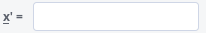
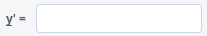
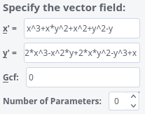
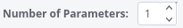
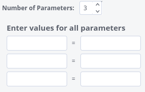

Polynomial Planar Phase Portraits
THE VECTOR FIELD WINDOW
Polynomial Planar Phase Portraits
THE VECTOR FIELD WINDOW
 In this window (subwindow in the main P4 window)
you will be able to introduce a Polynomial Differential System
or modify an existing one. The system can be written using parameters,
but you must provide a concrete value for each of them. This feature is given
to produce an easy way to modify systems inside a concrete parametric family.
You can also enter the common factor between the two polynomials if you
know it.
In this window (subwindow in the main P4 window)
you will be able to introduce a Polynomial Differential System
or modify an existing one. The system can be written using parameters,
but you must provide a concrete value for each of them. This feature is given
to produce an easy way to modify systems inside a concrete parametric family.
You can also enter the common factor between the two polynomials if you
know it.
-
In the lines  and  you must
introduce the Polynomial Differential System you wish. You must use the
variables x and y. You may use the symbols "+",
"-", "*", "/", "^",
"(", and ")" apart from real numbers.
You can also introduce special funtions as sqrt(), sin(),
cos(), tan(), ln(), exp() in the coefficients
of the Polynomial Differential System, and any other accepted by MAPLE/REDUCE.
Be sure that what you introduce is a polynomial differential system on
the variables x and y. Once you have introduced it, your
window may look like

There is no limit on the length or the degree of the polynomial (except the
limits imposed by MAPLE/REDUCE.)
-
In the line you may introduce the Greatest Common Factor
between the two polynomials which define the vector field, if you know it. Normally there
will not exist a common factor, and so, you will leave the default input of 1.
In case that you suspect the existence of a common factor but you do not
know it, then you must enter 0. The program will do its best to look for it.
But if you know it for any reason, you will help a lot the program if you give it here.
In that case, you also must introduce the Polynomial Differential System that results
after taking out the common factor. Of course, if you say that there is no common factor
when there really exists a non trivial one, all you get is a computing error.
Thus, by default, one can leave the GCF field 0.
-
If you have used any parameter, now you must enter a value for them. In the
line  you must enter the exact number of parameters you are using.
Then the window will unfold like:

and you will have to enter the name of the parameters you are using (case sensitive) and
the value you assign to each one. The resulting window in case of one parameter may look like:
-
Note: If you make a change to the vector field or the paremeters, you have to re-evaluate in order
to reflect the changes in the plot window or view windows.
 Back to the main page
Back to the main page
 Back to the windows page
Back to the windows page